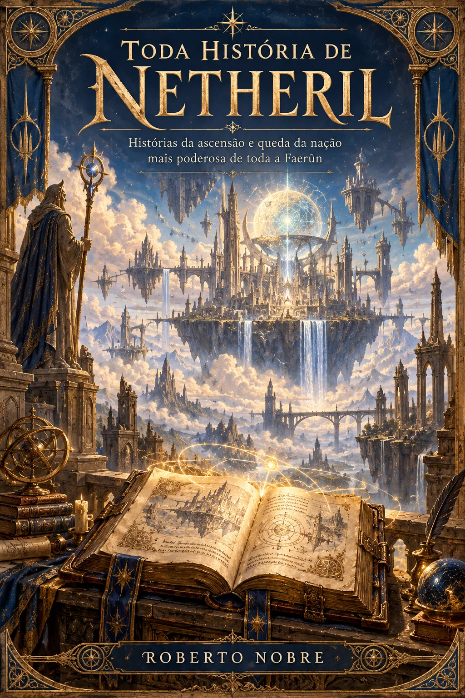

ROMANCE · EM DESENVOLVIMENTO
O Bunker
Dois desconhecidos, um abrigo e o mundo lá fora deixando de existir.
Ler os capítulos disponíveisACERVO LITERÁRIO · ROBERTO NOBRE
Uma estante de mundos, personagens e encontros. Escolha uma história e continue a leitura diretamente aqui.
Explorar o acervoSELEÇÃO DA ESTANTE
Dois desconhecidos, um abrigo e o mundo lá fora deixando de existir.
Ler os capítulos disponíveis

Histórias da ascensão e queda da nação mais poderosa de Faerûn.
Explorar os capítulosTODAS AS OBRAS
Carregando estante…
BIBLIOTECA NOBRE
Romances, histórias ilustradas e crônicas de RPG de Roberto Nobre, reunidos em um único lugar.
Voltar à estante ↑